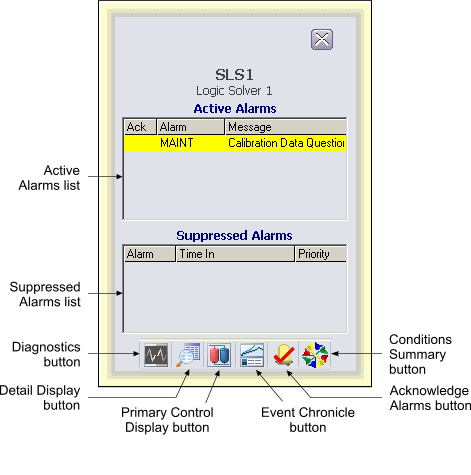

SIS logic solver faceplate
The Logic Solver faceplate, SIS_LSDEV_fp contains active and suppressed alarm lists. The following shows an example of the Logic Solver faceplate in run mode.

You can open the Logic Solver faceplate in DeltaV Operate run mode by clicking an SLS alarm button in the Alarm Banner or clicking the Open Faceplate button on the Toolbar and typing the Logic Solver device tag.
The following items are contained in the Logic Solver faceplate:
Active Alarms list – Contains the currently active or unacknowledged alarms along with the alarm message and an indicator that shows if the alarm has been acknowledged.
Suppressed Alarms list – Contains the alarms that are currently suppressed (either shelved, out of service or both) along with the time they were suppressed.
Ack Single Selected Alarm button – Acknowledges the currently selected alarm in the Active Alarm list.
Toolbar – Click the icons from left to right to perform the following functions, respectively:
Diagnostics button: open the Diagnostics display for the Logic Solver.
Detail Display button: open the detail display for the Logic Solver, if one has been defined.
Primary Control Display button: open the primary control display associated with the Logic Solver, if one has been defined.
Event Chronicle button: open the Process History Viewer.
Acknowledge Alarms button: acknowledge all alarms in the Logic Solver.
Condition Summary button: opens the Conditions Summary application.